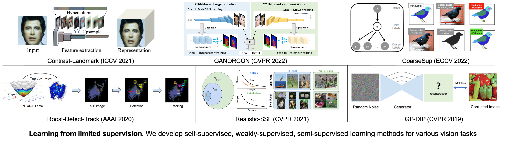

University of Virginia
The cost of collecting human annotations is a significant barrier in many vision tasks. For example, annotating the landmarks or semantic parts of an object is much more time-consuming than categorizing the image; annotating the 3D pose of an object is often done by reasoning with 3D model's projection to the 2D image; annotating objects with fine-grained labels (e.g. Grasshopper sparrow vs. Lincoln's sparrow) requires strong domain-specific expertise. In addition, labeling without clearly defined protocols leads to a variation in labeling styles of different annotators, which can make subsequent learning harder.
To minimize the annotation cost, one of our research goals is to develop learning algorithms in the context of different vision tasks to reduce the cost of supervision and allow learning from different labeling styles.
[Ongoing projects] Our recent efforts in this direction include developing various label-efficient training algorithms in the context of modern vision tasks, such as vision-language models and open-vocabulary 3D recognition and reconstruction.
Understanding object pose and its 3D structure is a central computer vision problem. Structure-from-motion (SfM) algorithms are the default solution for this task. However, SfM degrades in performance significantly on sparse 2D observations; SfM, along with multi-view stereo (MVS), only provides a coarse description of the 3D geometry and texture; Manipulating 3D shapes requires tremendous human efforts and expertise in 3D software; Recent breakthroughs in learning neural scene representations (e.g. NeRF) have shown that the long-standing problem of photo-realistic novel view synthesis and detailed 3D reconstruction is attainable. However, the most limiting assumption in these works is that all images of the scene are accurately localized. To address these challenges, our prior research has advanced techniques for unsupervised 3D pose estimation and 3D reconstruction and manipulation.
Our research goal in this thrust is to build a system capable of holistic 3D scene understanding and reconstruction. We humans have a holistic understanding of the 3D visual world --- we can easily perceive the object categories, their location, and shapes and even interact with them. This is a fundamental capability required of intelligent agents to navigate and interact with the 3D environment. Besides this, reconstructing a realistic and immersive virtual 3D world has many applications in VR/AR, robotics, and autonomous driving.
However, such holistic 3D scene understanding and generation are beyond the current state-of-the-art computer vision systems. There are several critical challenges to address. First, scene understanding and 3D reconstruction are usually studied separately, which we believe should be integrated in a way that they are mutually beneficial; Second, compared to 2D tasks, the lack of human annotations becomes even more problematic for 3D tasks (e.g., 3D object detection and segmentation, 3D pose estimation); Third, unlike 2D images, 3D models are expensive to acquire, especially for deformable objects such as animals; We aim to build a system to holistically understand and reconstruct the 3D scene with minimal human supervision.
[Ongoing projects] We're developing algorithms to minimize the human annotation cost for open-vocabulary monocular 3D recognition tasks, and we're also building systems for joint semantic and geometry understanding. We are also interested in 3D recontruction and tracking in dynamic scenes.
We have sucessfully applied computer vision and machine learning techniques in ecology (e.g., analyzing bird migration using 20 years of extensive radar data) and chemistry (e.g., predicting the hydrocarbon adsorption in zeolites)
[Ongoing projects] We are enthusiastic about building multidisciplinary collaboration and promoting the application of AI across various scientific fields including but not limited to robotics, natual language processing, climate change, and material discovery. Welcome to meet and talk with us about potential cross-field collaboration opportunities!